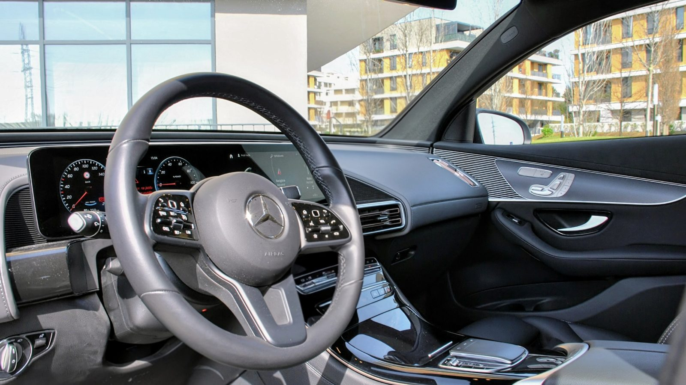
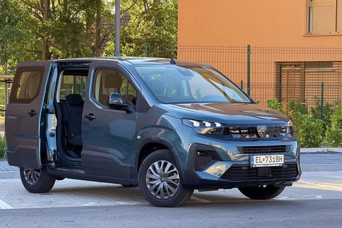
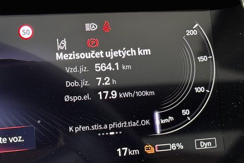

Všetky výhody nižšie sa viažu na druh pohonu zapísaný v osvedčení o evidencii, nie na vek auta. Ojazdený elektromobil z dovozu má rovnaké výhody ako nový zo salónu.
Prehľad
| Výhoda | Elektromobil | Plug-in hybrid | Pre koho |
|---|---|---|---|
| Poplatok za prvú evidenciu | 33 € | sadzba podľa výkonu × 0,2 | pre všetkých |
| Cestná daň | 0 € | o 50 % nižšia | pre firmy a podnikateľov |
| Daňové odpisy | 2 roky namiesto 4 | 2 roky namiesto 4 | pre firmy a podnikateľov |
| Zdanenie súkromného používania služobného auta | 0,5 % mesačne namiesto 1 % | 0,5 % mesačne namiesto 1 % | pre zamestnancov a konateľov |
| Diaľnice v Česku | bez známky, po oznámení | zľava len za podmienok | pre všetkých |
| Energia na 100 km pri nabíjaní doma | okolo 3 až 4 € | podľa podielu jazdy na elektrinu | pre všetkých |
Moderné autá s predĺženým dojazdom (EREV) bývajú v osvedčení zapísané ako plug-in hybridy a majú potom rovnaké výhody. Pri konkrétnom aute rozhoduje kolónka P.3.
Pri prihlásení
Poplatok za prvú evidenciu je pri elektromobile vždy 33 €, bez ohľadu na výkon. Pri spaľovacom aute sa počíta z výkonu a emisnej normy. Auto so 170 kW a normou Euro 6d zaplatí 280 €, rovnako silný plug-in hybrid 140 €. Pri výkonných autách dovezených zo zahraničia je to rozdiel stoviek eur. Viac v článku Prihlásenie dovezeného auta krok za krokom.
Pre firmy a podnikateľov
- Odpisy za dva roky. Elektromobily a plug-in hybridy patria do odpisovej skupiny 0. Cena auta sa tak dostane do daňových výdavkov dvakrát rýchlejšie ako pri benzíne či nafte, aj pri jazdenom aute.
- Nulová cestná daň. Osobné a ľahké úžitkové autá jazdiace výlučne na elektrinu majú ročnú sadzbu 0 €. Hybridy majú sadzbu zníženú o polovicu.
- Lacnejší benefit pre zamestnanca. Pri súkromnom používaní služobného auta zdaňuje zamestnanec mesačne 0,5 % zo vstupnej ceny namiesto 1 %. Pri aute za 40 000 € je to v prvom roku 200 € namiesto 400 € mesačne.
Podrobne v článku Elektromobil ako služobné auto.
V prevádzke
Pri nabíjaní doma stojí 100 km okolo 3 až 4 €, porovnateľné benzínové auto okolo 12,40 €. Pri 15 000 km ročne a nabíjaní prevažne doma to znamená zhruba 630 € za energiu namiesto zhruba 1 870 € za benzín. Výpočet aj ceny verejného nabíjania nájdete v článku Koľko stojí jazda na elektrinu.
K tomu menej servisu: odpadá výmena oleja a filtrov motora, sviečky, rozvody, spojka aj emisná kontrola a brzdy vďaka rekuperácii vydržia dlhšie. Viac v článku Servis elektromobilu.
Na cestách
Česko: diaľnice bez známky
Elektromobily jazdia po českých diaľniciach bez diaľničnej známky. Auto s českou evidenciou má túto výhodu automaticky, auto so slovenskými značkami musí oslobodenie pred prvou jazdou oznámiť Štátnemu fondu dopravnej infraštruktúry (SFDI).
- Oznámenie podáte formulárom pre elektromobily na stránke edalnice.gov.cz a priložíte osvedčenie o evidencii.
- Podať ho môžete e-mailom s elektronicky podpísaným PDF, cez dátovú schránku alebo poštou s úradne overeným podpisom.
- Oslobodenie platí, kým auto spĺňa podmienky, každý rok ho neobnovujete.
Plug-in hybridy s emisiami do 50 g CO₂/km platia v Česku štvrtinu ceny známky. Či a ako sa zľava vzťahuje aj na autá so slovenskou evidenciou, si overte na edalnice.gov.cz.
Slovensko
Diaľničnú známku na Slovensku platí elektromobil rovnako ako spaľovacie auto. Bezplatné či zľavnené parkovanie nie je celoslovenské pravidlo, závisí od parkovacej politiky konkrétneho mesta. V Bratislave si napríklad ľahko a rýchlo vybavíte polovičnú zľavu v systéme PAAS.
Čo elektromobil neušetrí
Pre úplnosť aj to, kde výhodu nemá:
- Odpočet DPH. Od roku 2026 si firma pri osobnom aute používanom aj súkromne odpočíta len polovicu DPH, bez ohľadu na pohon. Viac v článku Odpočet DPH pri kúpe auta.
- Diaľničná známka na Slovensku sa platí rovnako.
Dotácie
Na kúpu elektromobilu momentálne neexistuje štátny príspevok pre súkromné osoby ani pre firmy. Výzvy z Plánu obnovy sú určené na budovanie verejných nabíjacích staníc, nie na kúpu áut.
Časté otázky
Platia výhody aj pre jazdený elektromobil?
Áno. Poplatok za evidenciu, cestná daň, odpisy aj zdanenie služobného auta sa určujú podľa druhu pohonu v osvedčení o evidencii, nie podľa veku auta. Jazdený elektromobil z dovozu má rovnaké výhody ako nový.
Musím sa v Česku registrovať, ak mám elektromobil so slovenskými značkami?
Áno. Auto so zahraničnou evidenciou musí oslobodenie od diaľničného poplatku oznámiť Štátnemu fondu dopravnej infraštruktúry ešte pred prvou jazdou po českej diaľnici. Formulár nájdete na edalnice.gov.cz.
Má plug-in hybrid rovnaké výhody ako elektromobil?
Čiastočne. Odpisy za dva roky a zdanenie služobného auta sadzbou 0,5 % má rovnaké. Cestnú daň má zníženú o polovicu, nie nulovú, a poplatok za evidenciu nižší, ale nie fixných 33 €.
Je na kúpu elektromobilu dotácia?
Momentálne nie. Posledný štátny príspevok na kúpu elektromobilu pre súkromné osoby sa skončil a nový zatiaľ vypísaný nie je.
Koľko ušetríte vy?
Nástroj porovná ročné náklady elektromobilu a spaľovacieho auta podľa vášho nájazdu a toho, koľko nabijete doma. Pri konkrétnom aute z ponuky vám radi spočítame aj dane a poplatky.
Prehľad vychádza z pravidiel platných v októbri 2026. Nie sme daňoví poradcovia, pri firemnom aute prejdite konkrétne nastavenie so svojou účtovníčkou. Podmienky v iných krajinách sa môžu meniť, pred cestou si ich overte.

Elektromobil ako služobné autoOdpisy za dva roky, polovičné zdanenie zamestnanca a nulová cestná daň.
Koľko stojí jazda na elektrinuCena 100 km doma, v práci a na rýchlonabíjačke v porovnaní s benzínom. Hybrid, plug-in, alebo elektro?Rozdiely medzi typmi pohonu a ktorý sa hodí na akú jazdu.
Hybrid, plug-in, alebo elektro?Rozdiely medzi typmi pohonu a ktorý sa hodí na akú jazdu.